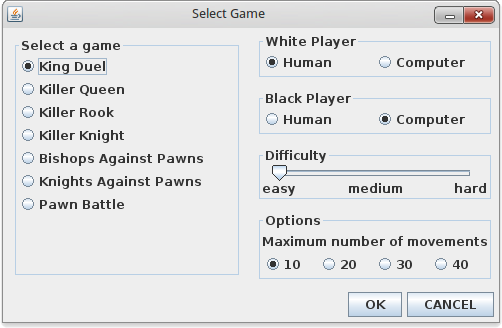

To start a game, select Game → Start . Following window dialog will be displayed:

At left it is a list game, select a game of your choice. At top right you choose if white pieces will be played by you or by computer, the same with black pieces. At middle right you define game difficulty, three difficulty levels are available: EASY, MEDIUM and HARD. At bottom right there are game options, each game has its own options, that is explained in corresponding sections. After selecting and configuring your game, click OK button to start it. In all games, white player starts first move.